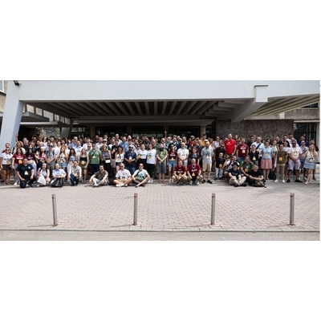
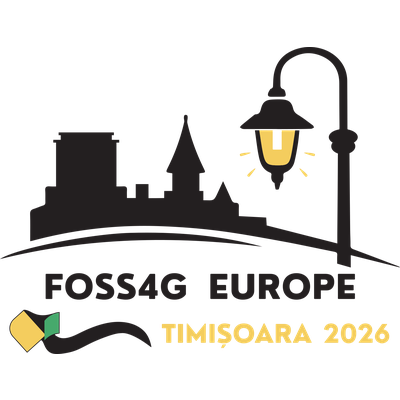
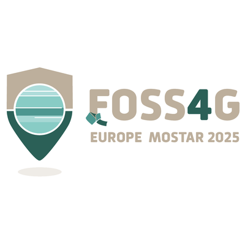
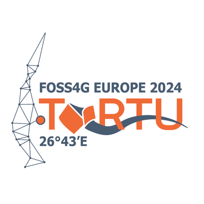
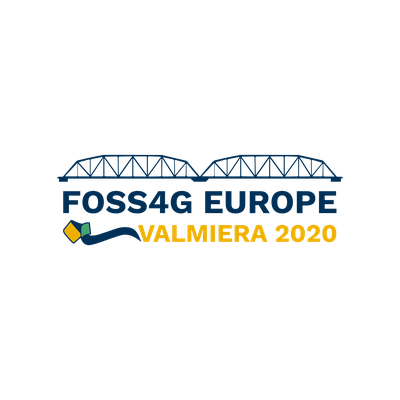
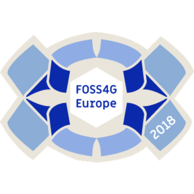
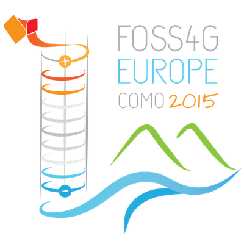
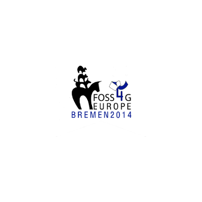
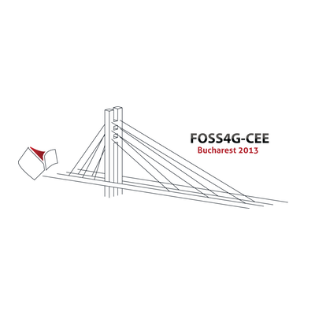
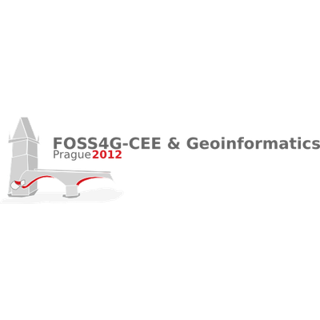

Timișoara, Romania
29.06 - 3.07.2026

Mostar, Bosnia-Herzegovina
14.07 - 20.07.2025

Tartu, Estonia
1.07 - 7.07.2024

Valmiera, Latvia
13.07 - 18.07.2020
Cancelled due to COVID19

Guimarães, Portugal
16.07 - 21.07.2018
Marne-La-Vallée, France
18.07 - 22.07.2017

Como, Italy
14.07 - 17.07.2015

Bremen, Germany
15.07 - 17.07.2014

Bucharest, Romania
16.06 - 20.06.2013

Prague, Czech Republic
21.05 - 23.05.2012